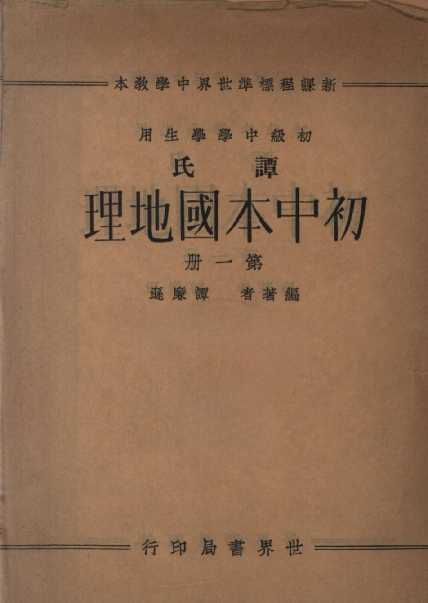

Occurrences
3
Exact minzu hits in this book

Textbook
This view contains all KWIC results for 民族 in this book, followed by the book's individual frequency result.
This table lists every minzu KWIC result found in this textbook.
| No. | Left context | Keyword | Right context |
|---|---|---|---|
| 369 | 縣名人數景寧、遂|昌、麗水⋮等縣,有一種特殊 | 民族 | 叫「|畲景寧一七、四〇〇客|,」本是猺|族的一種。他們的體質、容貌、風俗、言語、遂昌六、〇八五習慣, |
| 370 | 怎?樣於工業上有甚新發?展中|山有甚改良的計?畫〇浙江上游的商況怎樣?卭靑田、|麗水等處,有甚特殊的 | 民族 | ?本省內還有與此相類的民族嗎?第五節安徽省安徽省的槪況安|徽省在江|蘇省的西南,浙|江省的西北,南界 |
| 371 | 中|山有甚改良的計?畫〇浙江上游的商況怎樣?卭靑田、|麗水等處,有甚特殊的民族?本省內還有與此相類的 | 民族 | 嗎?第五節安徽省安徽省的槪況安|徽省在江|蘇省的西南,浙|江省的西北,南界江|西,西界第一章第五節安 |
Occurrences
3
Exact minzu hits in this book
Analysis chars
35,372
Cleaned characters used as denominator
Per 10k chars
0.85
Normalized frequency
| Subject | Geography |
|---|---|
| Textbook | 谭氏初中本国地理（第一册） |
| Keyword | minzu (民族) |
| Raw occurrences | 3 |
| Occurrences per 10,000 analysis characters | 0.85 |